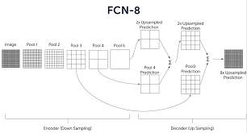
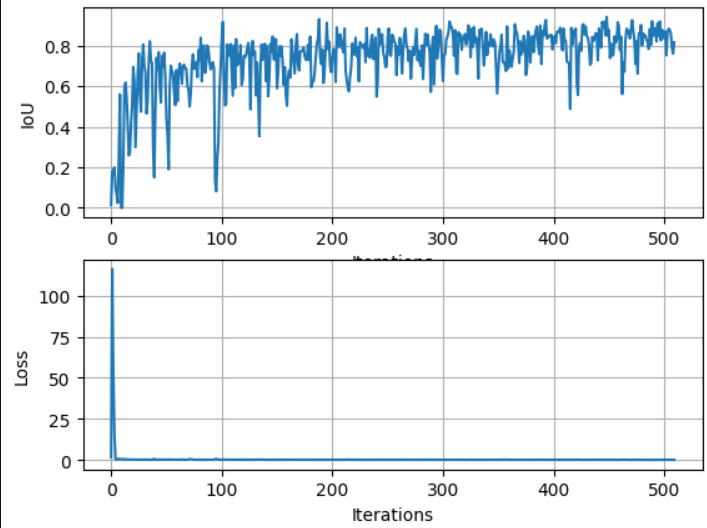

Road Segmentation for Autonomous Driving
Perception in autonomy- segmentation

Introduction
This project focuses on segmenting roads from aerial images using a VGG-FCN8 neural network. The primary goal is to accurately identify road pixels to aid in autonomous driving and GIS applications.
Model Architecture
The VGG-FCN8 model is a fully convolutional network based on the VGG16 architecture. It adapts the VGG16 network for segmentation tasks by adding upsampling layers to produce pixel-wise predictions.

Encoder and Decoder Explanation
The encoder part of the VGG-FCN8 model uses the VGG16 architecture pre-trained on ImageNet. It consists of 5 blocks of convolutional layers followed by max-pooling layers. The encoder is divided into three segments to facilitate skip connections
The decoder part of the VGG-FCN8 model upsamples the feature maps to the original image size using transposed convolutions. The decoder also incorporates skip connections from the encoder to retain spatial information.
Model Modifications
The VGG-FCN8 model was modified to accommodate binary road segmentation. The modifications include:
- Using only one output channel (binary classification) instead of 21 (original FCN8 used for PASCAL VOC)
- Adding transposed convolution layers to upsample the feature maps back to the original image size.
- Incorporating skip connections to combine lower-level and higher-level features.
Results
Training Loss Plots
